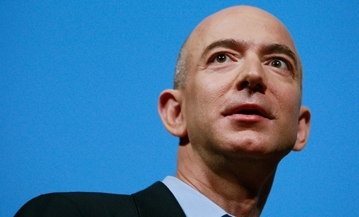

Teknoloji Dünyasını Şekillendiren Önemli İsimler
Steve Jobs
Apple markasının kurucu ortaklarından olan Steve Jobs, bilgisayar endüstrisinin en başarılı isimlerinden biri olarak görülmektedir. Next Computer ve Pixar Animasyon stüdyolarının da kuruculuğunu üstlenmiştir. Steve Jobs, 2011 yılında pankreas kanserinden dolayı hayatını kaybetti.
Jeff Bezos

E-ticaretin önemli isimlerinden olan Jeff Bezos, Amazon.com'un kurucusudur. 2013 yılında The Washington Post gazetesini satın aldı.
Sergey Brin
Google kurucularından biri olan Sergey Brin, arkadaşı Lary Page ile birlikte Google arama motorunu oluşturdu. Sergey Brin, dünya üzerindeki sayılı milyarderler arasında bulunmaktadır.
Linus Torvalds

Linus Torvalds, Linux işletim sistemi çekirdeğinin geliştiricisidir. Bilgisayar mimarisine yapmış olduğu katkılarıyla tanınıyor.
Peter Thiel
Peter Thiel, Ödeme sistemi olan PayPal'in kurucularından birisidir ve Facebook'a ilk yatırım yapan kişi olarak da ünlenmiştir. Peter Thiel, genç girişimcileri desteklemek amacıyla Peter Thiel bursunu oluşturmuştur.
Bill Gates
Bill Gates, Microsoft'un kurucusu ve yazılım mimarıdır. 75 milyar doların üzerindeki serveti ile beraber dünyanın en zenginlerinden birisidir. Bill Gates, Microsoft sayesinde kişisel bilgisayarlar kullanımının yayılmasına büyük katkı sağladı. Aynı zamanda, yardım severliği ve dağıttığı yardımlarla da tanınıyor.
Jack Dorsey
Jack Dorsey, sosyal paylaşım ağı olan Twitter'in kurucuları arasında yer alır. Twitter'in yanı sıra mobil ödeme sistemi olan Square'in kurucusudur. Dorsey, Amerika'nın 40 yaş altındaki en güçlü CEO'ları arasında bulunuyor.
Steve Wozniak
Steve Wozniak, Steve Jobs ile Apple'ın kuruculuğunu üstlenmiştir. 2006 yılında teknoloji şirketleri alıp geliştirmeyi hedefleyen Acquicor Tachnology şirketini kurar.
Jack Ma
Jack Ma, E-ticaret alanında dünyanın en önemli isimlerinden birisidir, Alibaba Grup'un kurucusu ve başkanıdır. Çinli iş adamının asıl mesleği ise İngilizce Öğretmenliğidir.
Sheryl Sandberg
Sheryl Sandberg, Facebook'ta Mark Zuckerberg'ten sonra en güçlü ikinci isimdir. Fortune dergisi tarafından En Güçlü 50 Kadın'dan biri seçilmiştir. Sandberg, ABD hazine bakanlığı'nda ve Google'da önemli görevlerde yer aldı.
Mark Zuckerberg
Mark Zuckerberg, neredeyse bütün dünyanın kullandığı sosyal paylaşım platformu Facebook'un kurucusudur. Dünyanın en genç zenginleri arasında yer almaktadır. Zuckerberg, Facebook dışında da Instagram, WhatsApp gibi birçok girişimleri vardır.
Elon Musk
Elon Musk, Paypal'in kurucuları arasında bulunmaktadır. Musk, SpaceX şirketinin kurucusu, Tesla Motors'un ise kurucu ortağıdır. Teknoloji tarihine adını kazıyan ünlü isim, uzay ve alternatif enerji teknolojileri konusunda da çalışmalarını halen sürdürmektedir.